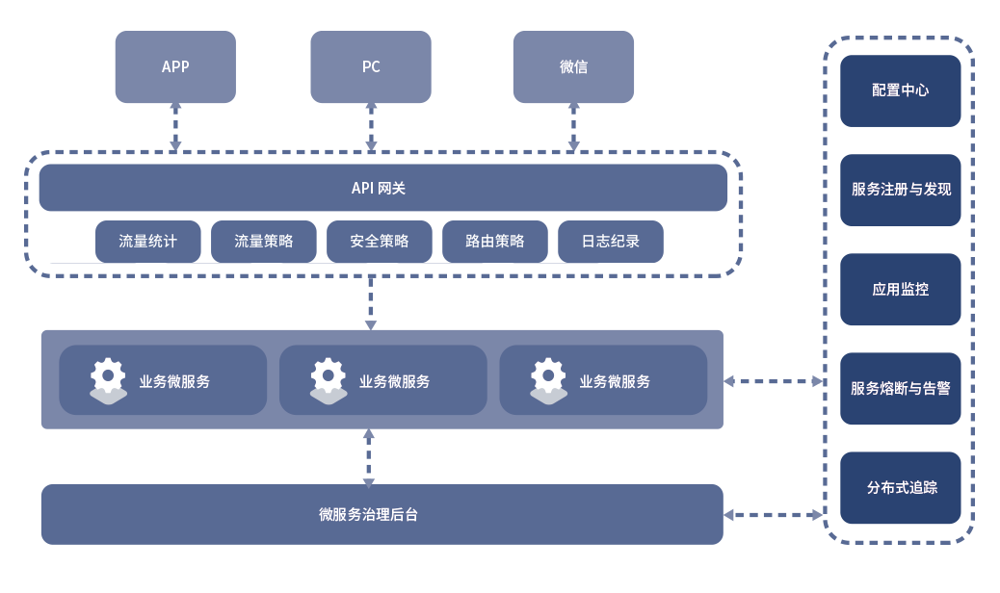

DaoCloud Microservices Platform (DMP)
DaoCloud微服务治理平台，是支撑企业微服务架构的一站式微服务治理与监控平台：
- DMP全面兼容 Spring Cloud 微服务框架，提供高可靠，高性能的企业级微服务组件。
- DMP的服务管理覆盖微服务的整个生命周期，支持服务元数据管理，服务分组与搜索，服务上线与下线，服务（外部访问）路由策略，服务熔断，服务（外部访问）安全策略，服务（外部访问）流控策略。
- DMP的服务监控涵盖了应用监控（JVM和应用相关指标）和链路追踪，同时客户端SDK可以通过埋点，支持对业务指标的监控。

官网
文档站介绍
此系列文档包含了应用/服务如何进行改造之后接入DMP的常见用法。并在文档中提供了演示的源码，供开发者参考使用。
当前版本：DMP v2.0.0